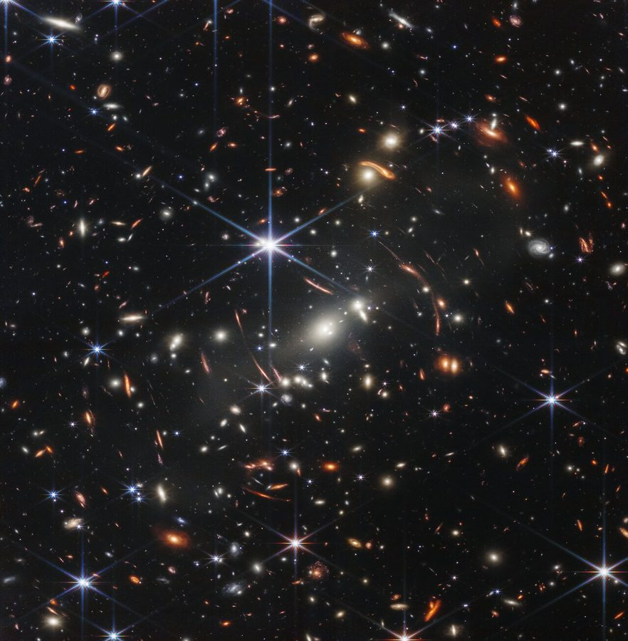

Images · Extragalactic Astronomy
Extragalactic Astronomy
Nearby galaxies, distant galaxies and quasars, and strong gravitational lenses: topics where sharper, better-understood images make a difference.
In brief
Much of extragalactic astronomy is measured from images: the resolved stars of nearby galaxies, the faint host galaxies of distant quasars, the arcs of strongly lensed galaxies, and the photometry behind the distance ladder. In each case, the results depend on how well the point spread function, the sampling and the noise of the images are understood. Images from the Hubble, Webb and Euclid telescopes, like Roman's, are often undersampled in some of their bands, which is the problem my work on image reconstruction addresses.

How I can contribute
These topics are new to me as a researcher, and I am glad to contribute my image processing expertise to them: reconstructing images with controlled point spread functions (Effortless), understanding their noise and systematics, and checking how image processing affects the measurements that follow. If you work on one of these topics and your images could benefit, I would be happy to talk.